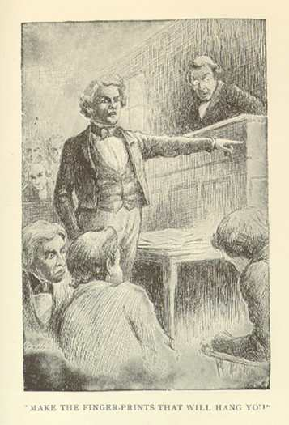

All of these reviews are British except for the last one, which was written by an American woman in defense of the South. Click for commentary.

To browse the text of Puddn'head Wilson, see this html version, compliments of the Project Gutenberg etext.